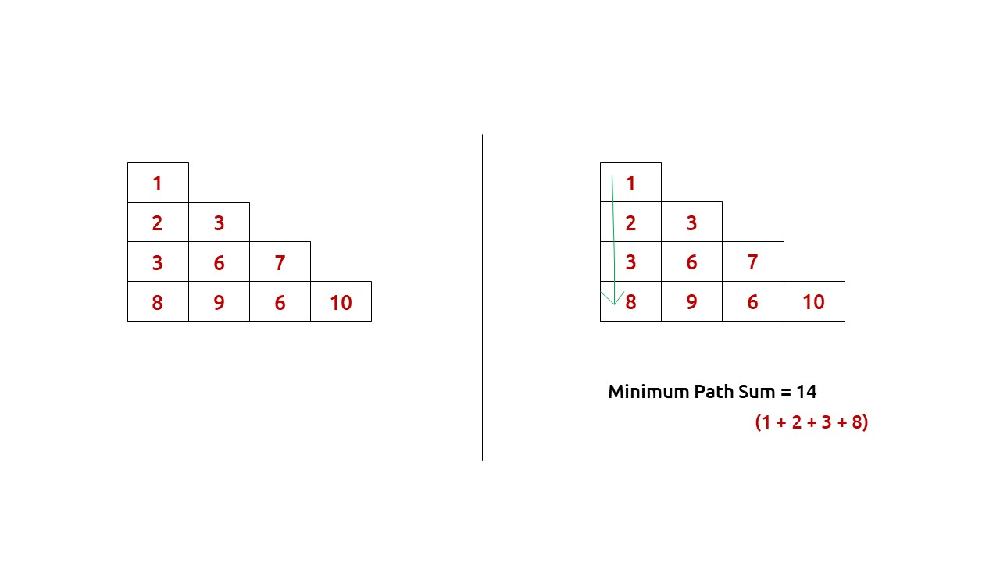
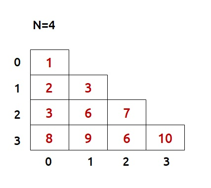
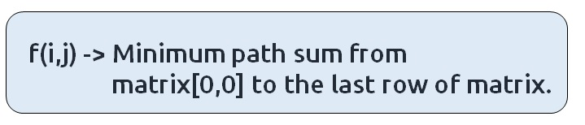
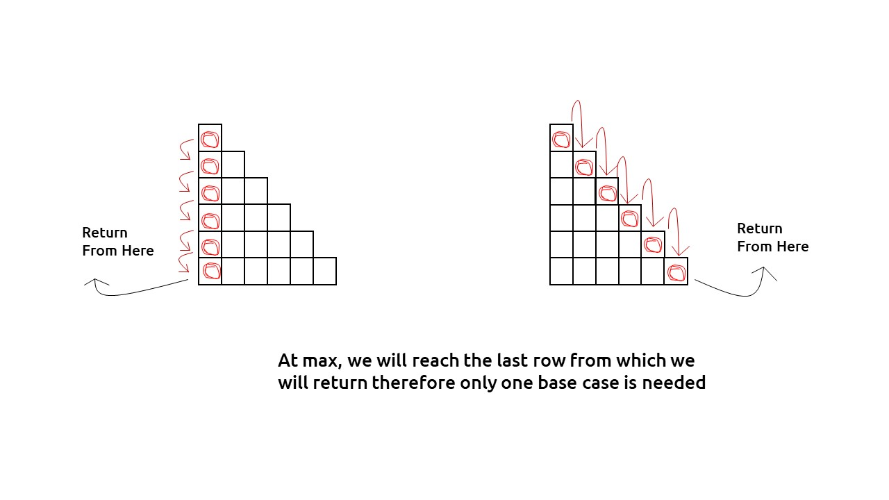
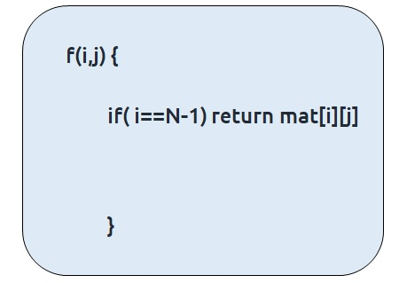
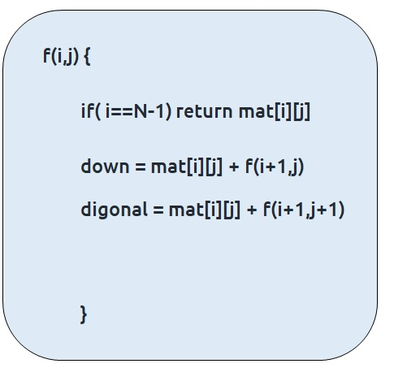
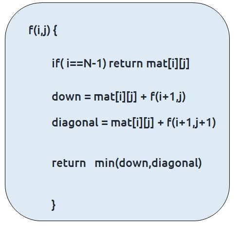
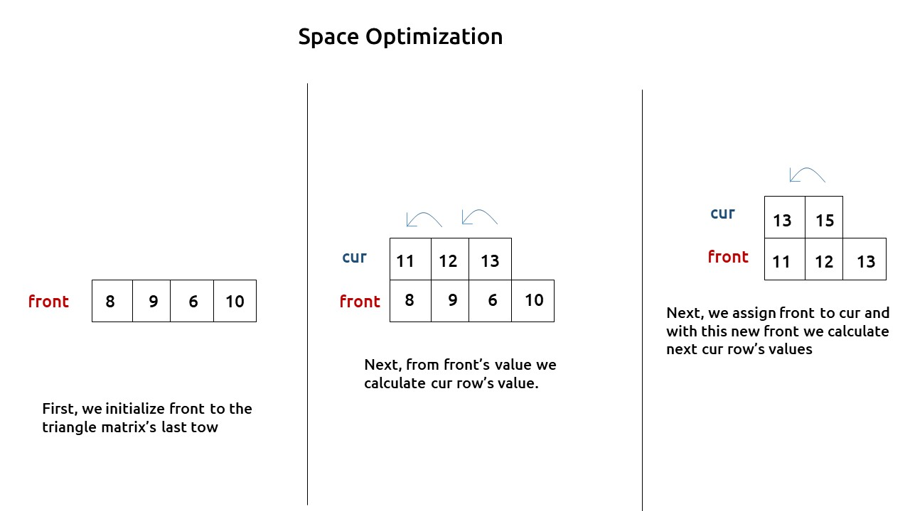

In this article, we will solve the most asked coding interview problem: Minimum path sum in Triangular Grid
Problem Link: Fixed Starting and Ending Point
Problem Description:
We are given a Triangular matrix. We need to find the minimum path sum from the first row to the last row.
At every cell we can move in only two directions: either to the bottom cell (↓) or to the bottom-right cell(↘)
Examples
Example: 

Disclaimer: Don’t jump directly to the solution, try it out yourself first.
Memorization Approach
Algorithm / Intuition
This question is a slight modification of the question discussed in Minimum Path Sum in a Grid. In the previous problem, we were given a rectangular matrix whereas here the matrix is in the form of a triangle. Moreover, we don’t have a fixed destination, we need to return the minimum sum path from the top cell to any cell of the bottom row.
Why a Greedy Solution doesn’t work?
As we have to return the minimum path sum, the first approach that comes to our mind is to take a greedy approach and always form a path by locally choosing the cheaper option.
This approach will not give us the correct answer. Let us look at this example to understand:

At every cell, we have two choices: to move to the bottom cell or move to the bottom-right cell. Our ultimate aim is to provide a path that provides us the least path sum. Therefore at every cell, we will make the choice to move which costs us less.
- Figure on the left gives us a greedy solution, where we move by taking the local best choice.
- Figure on the right gives us a non-greedy solution.
We can clearly see the problem with the greedy solution. Whenever we are making a local choice, we may tend to choose a path that may cost us way more later.
Therefore, the other alternative left to us is to generate all the possible paths and see which is the path with the minimum path sum. To generate all paths we will use recursion.
Steps to form the recursive solution:
We will first form the recursive solution by the three points mentioned in Dynamic Programming Introduction.
Step 1: Express the problem in terms of indexes.
We are given a triangular matrix with the number of rows equal to N.
We can define the function with two parameters i and j, where i and j represent the row and column of the matrix.
Now our ultimate aim is to reach the last row. We can define f(i,j) such that it gives us the minimum path sum from the cell [i][j] to the last row.

We want to find f(0,0) and return it as our answer.
Base Case:
There will be a single base case:
- When i == N-1, that is when we have reached the last row, so the min path from that cell to the last row will be the value of that cell itself, hence we return mat[i][j].
At every cell, we have two options to move to the bottom cell(↓) or to the bottom-right cell(↘). If we closely observe the triangular grid, at max we can reach the last row from where we return so we will not be able to go move out of the index of the grid. Therefore only one base condition is required.

The pseudocode till this step will be:

Step 2: Try out all possible choices at a given index.
At every index we have two choices, one to go to the bottom cell(↓) other to the bottom-right cell(↘). To go to the bottom, we will increase i by 1, and to move towards the bottom-right we will increase both i and j by 1.
Now when we get our answer for the recursive call (f(i+1,j) or f(i+1,j+1)), we need to also add the current cell value to it as we have to include it too for the current path sum.

Step 3: Take the maximum of all choices
As we have to find the minimum path sum of all the possible unique paths, we will return the minimum of the choices(down and diagonal)
The final pseudocode after steps 1, 2, and 3:

Steps to memoize a recursive solution:
If we draw the recursion tree, we will see that there are overlapping subproblems. In order to convert a recursive solution the following steps will be taken:
- Create a dp array of size [N][N]
- Whenever we want to find the answer of a particular row and column (say f(i,j)), we first check whether the answer is already calculated using the dp array(i.e dp[i][j]!= -1 ). If yes, simply return the value from the dp array.
- If not, then we are finding the answer for the given values for the first time, we will use the recursive relation as usual but before returning from the function, we will set dp[i][j] to the solution we get.
Code
#include <bits/stdc++.h>
using namespace std;
// Function to find the minimum path sum recursively with memoization
int minimumPathSumUtil(int i, int j, vector<vector<int> > &triangle, int n,
vector<vector<int> > &dp) {
// If the result for this cell is already calculated, return it
if (dp[i][j] != -1)
return dp[i][j];
// If we're at the bottom row, return the value of the current cell
if (i == n - 1)
return triangle[i][j];
// Calculate the sum of two possible paths: going down and going diagonally
int down = triangle[i][j] + minimumPathSumUtil(i + 1, j, triangle, n, dp);
int diagonal = triangle[i][j] + minimumPathSumUtil(i + 1, j + 1, triangle, n, dp);
// Store the minimum of the two paths in the dp table and return it
return dp[i][j] = min(down, diagonal);
}
// Function to find the minimum path sum in the given triangle
int minimumPathSum(vector<vector<int> > &triangle, int n) {
// Create a memoization table to store computed results
vector<vector<int> > dp(n, vector<int>(n, -1));
// Call the recursive function to find the minimum path sum
return minimumPathSumUtil(0, 0, triangle, n, dp);
}
int main() {
// Define the triangle as a 2D vector
vector<vector<int> > triangle{{1},
{2, 3},
{3, 6, 7},
{8, 9, 6, 10}};
// Get the number of rows in the triangle
int n = triangle.size();
// Call the minimumPathSum function and print the result
cout << minimumPathSum(triangle, n);
return 0;
}
import java.util.*;
class TUF {
// Function to find the minimum path sum in the triangle using dynamic programming
static int minimumPathSumUtil(int i, int j, int[][] triangle, int n, int[][] dp) {
// Check if the result for the current position (i, j) is already calculated
if (dp[i][j] != -1)
return dp[i][j];
// If we are at the bottom row, return the value in the triangle
if (i == n - 1)
return triangle[i][j];
// Calculate the minimum path sum by recursively considering two possible paths: down and diagonal
int down = triangle[i][j] + minimumPathSumUtil(i + 1, j, triangle, n, dp);
int diagonal = triangle[i][j] + minimumPathSumUtil(i + 1, j + 1, triangle, n, dp);
// Store the result in the dp array and return the minimum of the two paths
return dp[i][j] = Math.min(down, diagonal);
}
// Function to find the minimum path sum in the triangle
static int minimumPathSum(int[][] triangle, int n) {
// Create a 2D array to store computed results, initialize with -1
int dp[][] = new int[n][n];
for (int row[] : dp)
Arrays.fill(row, -1);
// Call the utility function to find the minimum path sum starting from the top
return minimumPathSumUtil(0, 0, triangle, n, dp);
}
public static void main(String args[]) {
int triangle[][] = {{1},
{2, 3},
{3, 6, 7},
{8, 9, 6, 10}};
int n = triangle.length;
// Call the minimumPathSum function and print the result
System.out.println(minimumPathSum(triangle, n));
}
}
def minimumPathSumUtil(i, j, triangle, n, dp):
# Check if we have already computed the minimum path sum for this cell
if dp[i][j] != -1:
return dp[i][j]
# If we are at the bottom of the triangle, return the value in the current cell
if i == n - 1:
return triangle[i][j]
# Calculate the minimum path sum by considering two possible moves: down and diagonal
down = triangle[i][j] + minimumPathSumUtil(i + 1, j, triangle, n, dp)
diagonal = triangle[i][j] + minimumPathSumUtil(i + 1, j + 1, triangle, n, dp)
# Store the computed minimum path sum in the memoization table
dp[i][j] = min(down, diagonal)
return dp[i][j]
# Define a wrapper function to initialize memoization table and start the computation
def minimumPathSum(triangle, n):
dp = [[-1 for j in range(n)] for i in range(n)] # Initialize a memoization table with -1
return minimumPathSumUtil(0, 0, triangle, n, dp) # Start the recursive computation
# Define the main function where you set up the triangle and call the minimumPathSum function
def main():
triangle = [[1], [2, 3], [3, 6, 7], [8, 9, 6, 10]]
n = len(triangle)
# Call the minimumPathSum function and print the result
print(minimumPathSum(triangle, n))
# Check if this script is the main program entry point
if __name__ == "__main__":
main() # Call the main function to start the program
function minimumPathSumUtil(i, j, triangle, n, dp) {
// If the result is already computed, return it
if (dp[i][j] !== -1) {
return dp[i][j];
}
// If we are at the last row, return the value in the triangle
if (i === n - 1) {
return triangle[i][j];
}
// Calculate the minimum path sum by moving down and diagonally
const down = triangle[i][j] + minimumPathSumUtil(i + 1, j, triangle, n, dp);
const diagonal = triangle[i][j] + minimumPathSumUtil(i + 1, j + 1, triangle, n, dp);
// Store the result in the DP array and return it
dp[i][j] = Math.min(down, diagonal);
return dp[i][j];
}
function minimumPathSum(triangle, n) {
// Initialize the DP array with -1 values
const dp = new Array(n).fill().map(() => new Array(n).fill(-1));
return minimumPathSumUtil(0, 0, triangle, n, dp);
}
function main() {
const triangle = [
[1],
[2, 3],
[3, 6, 7],
[8, 9, 6, 10]
];
const n = triangle.length;
console.log(minimumPathSum(triangle, n));
}
// Call the main function to execute the code
main();
Output: 14
Complexity Analysis
Time Complexity: O(N*N)
Reason: There are two nested loops
Space Complexity: O(N*N)
Reason: We are using an external array of size ‘N*N’. The stack space will be eliminated.
Tabulation Approach
Algorithm / Intuition
Steps to convert Recursive Solution to Tabulation one.
Recursion/Memoization is a top-down approach whereas tabulation is a bottom-up approach. As in recursion/memoization, we have moved from 0 to N-1, in tabulation we move from N-1 to 0, i.e the last row to the first one.
The steps to convert to the tabular solution are given below:
- Declare a dp[] array of size [N][N].
- First initialize the base condition values, i.e the last row of the dp matrix to the last row of the triangle matrix.
- Our answer should get stored in dp[0][0]. We want to move from the last row to the first row. So that whenever we compute values for a cell, we have all the values required to calculate it.
- If we see the memoized code, the values required for dp[i][j] are dp[i+1][j] and dp[i+1][j+1]. So we only need the values from the ‘i+1’ row.
- We have already filled the last row (i=N-1), if we start from row ‘N-2’ and move upwards we will find the values correctly.
- We can use two nested loops to have this traversal.
Code
#include <bits/stdc++.h>
using namespace std;
// Function to find the minimum path sum in the given triangle using dynamic programming
int minimumPathSum(vector<vector<int> > &triangle, int n) {
// Create a 2D DP (dynamic programming) array to store minimum path sums
vector<vector<int> > dp(n, vector<int>(n, 0));
// Initialize the bottom row of dp with the values from the triangle
for (int j = 0; j < n; j++) {
dp[n - 1][j] = triangle[n - 1][j];
}
// Iterate through the triangle rows in reverse order
for (int i = n - 2; i >= 0; i--) {
for (int j = i; j >= 0; j--) {
// Calculate the minimum path sum for the current cell
int down = triangle[i][j] + dp[i + 1][j];
int diagonal = triangle[i][j] + dp[i + 1][j + 1];
// Store the minimum of the two possible paths in dp
dp[i][j] = min(down, diagonal);
}
}
// The top-left cell of dp now contains the minimum path sum
return dp[0][0];
}
int main() {
// Define the triangle as a 2D vector
vector<vector<int> > triangle{{1},
{2, 3},
{3, 6, 7},
{8, 9, 6, 10}};
// Get the number of rows in the triangle
int n = triangle.size();
// Call the minimumPathSum function and print the result
cout << minimumPathSum(triangle, n);
return 0;
}
import java.util.*;
class TUF {
// Function to find the minimum path sum in the triangle using dynamic programming
static int minimumPathSum(int[][] triangle, int n) {
// Create a 2D array to store intermediate results
int dp[][] = new int[n][n];
// Initialize the bottom row of dp with the values from the bottom row of the triangle
for (int j = 0; j < n; j++) {
dp[n - 1][j] = triangle[n - 1][j];
}
// Starting from the second to last row, calculate the minimum path sum for each element
for (int i = n - 2; i >= 0; i--) {
for (int j = i; j >= 0; j--) {
// Calculate the two possible paths: moving down or moving diagonally
int down = triangle[i][j] + dp[i + 1][j];
int diagonal = triangle[i][j] + dp[i + 1][j + 1];
// Store the minimum of the two paths in dp
dp[i][j] = Math.min(down, diagonal);
}
}
// The result is stored at the top of dp array
return dp[0][0];
}
public static void main(String args[]) {
int triangle[][] = {{1},
{2, 3},
{3, 6, 7},
{8, 9, 6, 10}};
int n = triangle.length;
// Call the minimumPathSum function and print the result
System.out.println(minimumPathSum(triangle, n));
}
}
def minimum_path_sum(triangle, n):
# Create a 2D array dp to store minimum path sums
dp = [[0 for j in range(n)] for i in range(n)]
# Initialize the bottom row of dp with the values from the last row of the triangle
for j in range(n):
dp[n - 1][j] = triangle[n - 1][j]
# Start from the second-to-last row and work upwards
for i in range(n - 2, -1, -1):
for j in range(i, -1, -1):
# Calculate the minimum path sum for the current cell by considering two possible moves: down and diagonal
down = triangle[i][j] + dp[i + 1][j]
diagonal = triangle[i][j] + dp[i + 1][j + 1]
# Store the minimum of the two possible moves in dp
dp[i][j] = min(down, diagonal)
# The minimum path sum will be stored in dp[0][0] after the loops
return dp[0][0]
def main():
# Define the input triangle and its size
triangle = [[1], [2, 3], [3, 6, 7], [8, 9, 6, 10]]
n = len(triangle)
# Call the minimum_path_sum function and print the result
print(minimum_path_sum(triangle, n))
if __name__ == '__main__':
main()
function minimumPathSum(triangle, n) {
// Initialize the DP array with all zeros
const dp = new Array(n).fill().map(() => new Array(n).fill(0));
// Initialize the bottom row of the DP array with the values from the triangle
for (let j = 0; j < n; j++) {
dp[n - 1][j] = triangle[n - 1][j];
}
// Start from the second-to-last row and work upwards
for (let i = n - 2; i >= 0; i--) {
for (let j = 0; j <= i; j++) {
// Calculate the minimum path sum by considering the down and diagonal moves
const down = triangle[i][j] + dp[i + 1][j];
const diagonal = triangle[i][j] + dp[i + 1][j + 1];
// Store the minimum of down and diagonal in the DP array
dp[i][j] = Math.min(down, diagonal);
}
}
// The minimum path sum will be stored in the top-left corner of the DP array
return dp[0][0];
}
function main() {
const triangle = [
[1],
[2, 3],
[3, 6, 7],
[8, 9, 6, 10]
];
const n = triangle.length;
console.log(minimumPathSum(triangle, n));
}
// Call the main function to execute the code
main();
Output: 14
Complexity Analysis
Time Complexity: O(N*N)
Reason: There are two nested loops
Space Complexity: O(N*N)
Reason: We are using an external array of size ‘N*N’. The stack space will be eliminated.
Space Optimization Approach
Algorithm / Intuition
If we closely look the relation,
dp[i][j] = matrix[i][j] + min(dp[i+1][j] + dp[i+1][j+1]))
We see that we only need the next row, in order to calculate dp[i][j]. Therefore we can space optimize it.
Initially we can take a dummy row ( say front). We initialize this row to the triangle matrix's last row( as done in tabulation).
Now the current row(say cur) only needs the front row’s value in order to calculate dp[i][j].

At last, front [0] will give us the required answer.
Code
#include <bits/stdc++.h>
using namespace std;
// Function to find the minimum path sum in the given triangle using dynamic programming
int minimumPathSum(vector<vector<int>> &triangle, int n) {
// Create two arrays to store the current and previous row values
vector<int> front(n, 0); // Represents the previous row
vector<int> cur(n, 0); // Represents the current row
// Initialize the front array with values from the last row of the triangle
for (int j = 0; j < n; j++) {
front[j] = triangle[n - 1][j];
}
// Iterate through the triangle rows in reverse order
for (int i = n - 2; i >= 0; i--) {
for (int j = i; j >= 0; j--) {
// Calculate the minimum path sum for the current cell
int down = triangle[i][j] + front[j];
int diagonal = triangle[i][j] + front[j + 1];
// Store the minimum of the two possible paths in the current row
cur[j] = min(down, diagonal);
}
// Update the front array with the values from the current row
front = cur;
}
// The front array now contains the minimum path sum from the top to the bottom of the triangle
return front[0];
}
int main() {
// Define the triangle as a 2D vector
vector<vector<int>> triangle{{1},
{2, 3},
{3, 6, 7},
{8, 9, 6, 10}};
// Get the number of rows in the triangle
int n = triangle.size();
// Call the minimumPathSum function and print the result
cout << minimumPathSum(triangle, n);
return 0;
}
import java.util.*;
class TUF {
// Function to find the minimum path sum in the triangle using dynamic programming
static int minimumPathSum(int[][] triangle, int n) {
// Create two arrays to store intermediate results: front and cur
int[] front = new int[n]; // Stores the results for the current row
int[] cur = new int[n]; // Stores the results for the next row
// Initialize the front array with the values from the bottom row of the triangle
for (int j = 0; j < n; j++) {
front[j] = triangle[n - 1][j];
}
// Starting from the second to last row, calculate the minimum path sum for each element
for (int i = n - 2; i >= 0; i--) {
for (int j = i; j >= 0; j--) {
// Calculate the two possible paths: moving down or moving diagonally
int down = triangle[i][j] + front[j];
int diagonal = triangle[i][j] + front[j + 1];
// Store the minimum of the two paths in the cur array
cur[j] = Math.min(down, diagonal);
}
// Update the front array with the values from the cur array for the next row
front = cur.clone();
}
// The result is stored at the top of the front array
return front[0];
}
public static void main(String args[]) {
int triangle[][] = {{1},
{2, 3},
{3, 6, 7},
{8, 9, 6, 10}};
int n = triangle.length;
// Call the minimumPathSum function and print the result
System.out.println(minimumPathSum(triangle, n));
}
}
def minimumPathSum(triangle, n):
# Initialize two lists: front and cur to represent the current and previous rows in dp
front = [0] * n # This represents the previous row
cur = [0] * n # This represents the current row
# Initialize the bottom row of dp (front) with the values from the last row of the triangle
for j in range(n):
front[j] = triangle[n - 1][j]
# Start from the second-to-last row and work upwards
for i in range(n - 2, -1, -1):
for j in range(i, -1, -1):
# Calculate the minimum path sum for the current cell by considering two possible moves: down and diagonal
down = triangle[i][j] + front[j]
diagonal = triangle[i][j] + front[j + 1]
# Store the minimum of the two possible moves in the current row (cur)
cur[j] = min(down, diagonal)
# Update the previous row (front) with the current row (cur) for the next iteration
front = cur
# The minimum path sum will be stored in the first element of the front list after the loops
return front[0]
def main():
# Define the input triangle and its size
triangle = [[1], [2, 3], [3, 6, 7], [8, 9, 6, 10]]
n = len(triangle)
# Call the minimumPathSum function and print the result
print(minimumPathSum(triangle, n))
if __name__ == '__main__':
main()
function minimumPathSum(triangle, n) {
// Initialize two arrays: front and cur
let front = new Array(n).fill(0);
let cur = new Array(n).fill(0);
// Initialize the bottom row of the front array with the values from the triangle
for (let j = 0; j < n; j++) {
front[j] = triangle[n - 1][j];
}
// Start from the second-to-last row and work upwards
for (let i = n - 2; i >= 0; i--) {
for (let j = 0; j <= i; j++) {
// Calculate the minimum path sum by considering the down and diagonal moves
const down = triangle[i][j] + front[j];
const diagonal = triangle[i][j] + front[j + 1];
// Store the minimum of down and diagonal in the cur array
cur[j] = Math.min(down, diagonal);
}
// Update the front array with the values from the cur array
front = [...cur];
}
// The minimum path sum will be stored in the first element of the front array
return front[0];
}
function main() {
const triangle = [
[1],
[2, 3],
[3, 6, 7],
[8, 9, 6, 10]
];
const n = triangle.length;
console.log(minimumPathSum(triangle, n));
}
// Call the main function to execute the code
main();
Output:14
Complexity Analysis
Time Complexity: O(N*N)
Reason: There are two nested loops
Space Complexity: O(N)
Reason: We are using an external array of size ‘N’ to store only one row.
Video Explanation
Special thanks to Anshuman Sharma and Abhipsita Das for contributing to this article on takeUforward. If you also wish to share your knowledge with the takeUforward fam, please check out this article